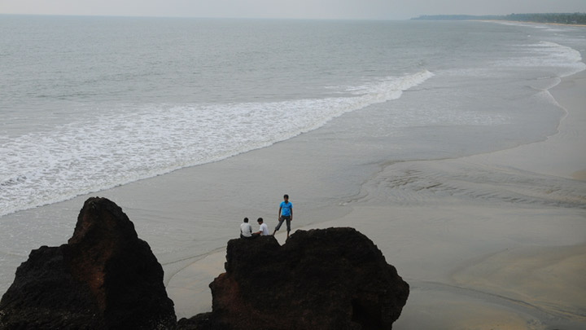
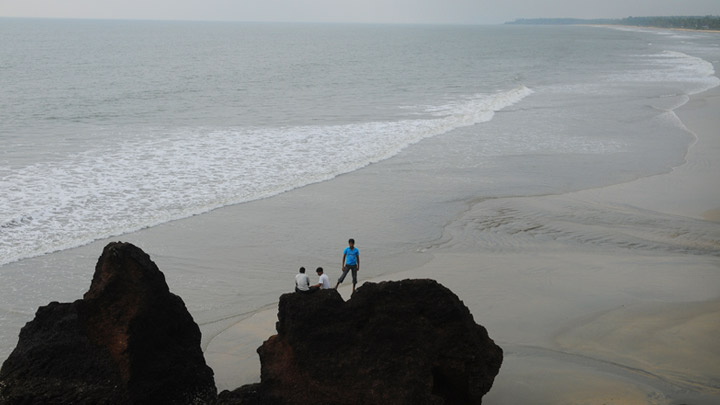

Kannur - Crown of Kerala
1. PARASSINIKKADAVU SNAKE PARK

Regarded as one of the finest snake sanctuaries of Asia, the Parassinikadavu Snake Park is the pride of the south. It is one of the most prominent reptile preservation centres in the country and is the only one in Kerala. The Parassinikadavu Snake Park is home to over 150 different species of reptiles like crocodiles, monitor lizards and snakes- both venomous and non-venomous. Not only reptiles and amphibians, but this snake park also goes a long way to preserve and protect many wild mammals, marine creatures as well as rare avifauna- both endemic and migratory.
The establishment of Parassinikadavu Snake Park was an initiative of the Visha Chikista Kendra, a medical institution that offers diagnosis and treatment of snakebites. The main motto behind establishing this park was to clarify undue superstitions about snakes, educate the common man about these species and create the right awareness among them. Each enclosure of the different species of animals has a brief description of their habitat, moods, peculiarities and interesting titbits that educate the visitors about these exotic and truly extraordinary species. Visiting this park is an absolute treat for the wildlife enthusiasts and animal lovers. You will be stunned by the unique and admirable traits of many of the park's inhabitants and will undoubtedly be left in awe of nature's wondrous creations.
2. PAYYAMBALAM BEACH
 
 The Payyambalam Beach is an impeccably maintained destination in Kannur. This secluded location is known for providing one with the opportunity to simply relax or enjoy a family picnic in absolute tranquillity. Surfing and swimming options are also available for those who seek a little adventure. The gentle waters form a picturesque setting that has been featured in many South Indian movies as well. Being close to Kannur town has made it a favourite haunt for tourists and locals alike.
The beach is the perfect place to relax and enjoy the sand and the sea. The blue green water with rich marine life and with wonderful green vegetation makes the visitors to feel and experience of heaven on the earth. You can indulge yourself in various water sports and the fresh breeze will surely rejuvenate your senses.The serene beaches, the lush palm vegetation, the white waves are the best things to enjoy in this Nature's Paradise.
3. KNNUR LIGHTHOUSE


Being Kerala's first lighthouse ever and Kannur's only one, the Kannur Lighthouse is a pretty big deal. Standing tall at the height of 75 feet, this lighthouse was first built in the early months of 1903. This cylindrical concrete tower has managed to withstand the attacks of the Arabian Sea and has been fully functional for over a century. The Kannur Lighthouse has a balcony with a light that is lit as the evening breaks in to alert the seamen of the land. Treat the history buff in you and visit this site to be impressed by its fascinating history, fall in love with its mesmerising backdrop and be delighted by the impeccable view.
Since the lighthouse stands at a considerable height, one is delighted with an enchanting and panoramic view of the entire city of Kannur, the limitless Arabian Sea, the Baby Beach and even parts of Payyaballam Beach. Going up the spiral staircase of this lighthouse, you are introduced to a variety of ancient navigational equipment whose immaculate engineering and impeccable designs are sure to impress you greatly. You can take a stroll along the perfectly maintained lawns of the lighthouse or enjoy a joyful musical fountain show in the evenings! If you want to dig deeper into the fascinating lighthouse history, there is a small auditorium that plays documentaries about the specifics of lighthouse revolution for the curious and inquisitive minds.